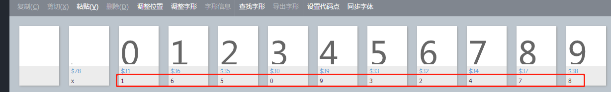

<div class="mb-3" style="margin-top: 100px;width: 60%;">
    <div class="container">
        <h2 class="align-content-center" style="color: #8bbafe"> 适合纯数字识别</h2>
        <p style="color:red;">目前不具备泛用性,只能识别标记为数字的字体(如下图),需要采集更多的情境才能做泛化</p>
    </div>

    <div class="row">
        <div class="col-3">
            <label for="font-file" class="form-label" style="font-size: large">上传字体文件:</label>
        </div>
        <div class="col-6">
            <input class="form-control" type="file" id="font-file" accept="application/font-woff,.ttf,.woff2">
        </div>
        <div class="col-3">
            <button type="submit" class="btn btn-primary" id="upload_font_file" onclick="post_digit_data()">提交</button>
        </div>
    </div>

</div>

<div class="container">
    
</div>

<div class="container" id="image-groups" style="margin-top: 20px">
    <div class="progress" style="margin-top: 100px">
        <div class="progress-bar progress-bar-striped progress-bar-animated" role="progressbar" aria-valuenow="0"
             aria-valuemin="0" aria-valuemax="100" style="width: 0%" id="crack-progress"></div>
    </div>
</div>

<div class="container-sm" style="text-align: -webkit-center;" id="json-textarea" hidden>
    <textarea class="json-area" id="myTextArea" cols=50 rows=10 onchange="prettyPrint()" readonly></textarea>
</div>